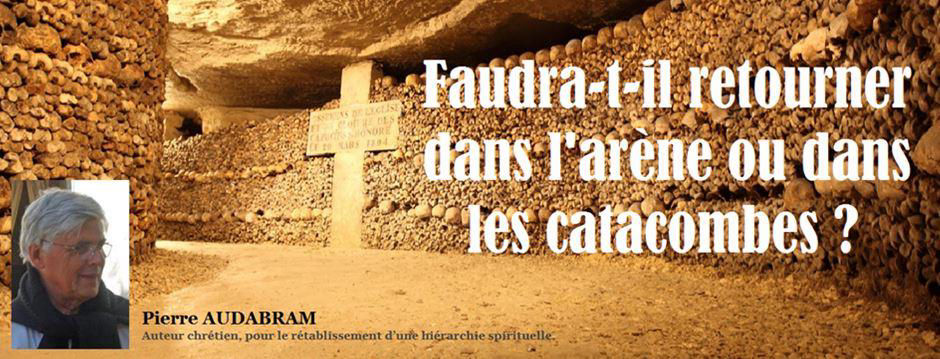

Faudra-t-il retourner dans l’arène ou dans les catacombes ?
par Pierre AUDABRAM

S’il y a un domaine où règne la plus parfaite confusion, c’est bien celui des choses de l’Esprit, celui qui touche au développement de l’homme, celui de sa progression vers le but ultime de toute destinée, à savoir Dieu. Tout a été mélangé, - à dessein bien sûr -, si bien que même les spécialistes se laissent prendre et désignent sous un vocable ce qui devrait être appelé par un autre. Il faut vraiment avoir le cœur bien accroché pour arriver à se frayer un chemin dans un tel brouillard. Voudrait-on dissimuler la véritable nature de l’homme intérieur qu’on ne s’y prendrait pas autrement. L’erreur criminelle que l’on rencontre à chaque pas, véritable péché contre l’Esprit, c’est le trouble entretenu entre la personnalité et l’âme. Même chez de soi-disant spécialistes, l’une est prise pour l’autre, et vice-versa. Rien de plus efficace, en effet, pour désorienter le chercheur sincère qui veut progresser.
On me dira que le sujet n’a pas une importance phénoménale à côté d’autres soucis, bien réels, eux, comme l’effondrement économique, le risque sanitaire, ou l’approche de moins en moins incertaine de conflits de toutes sortes. Et l’on me sortira alors la ribambelle de tous les arguments, bien matériels, dégoulinants de conformisme social à la petite semaine, qu’on brandira sous mon nez pour me faire comprendre que les besoins spirituels de l’homme ne sont qu’une espèce de caprice de gens bien portants, qui n’ont rien à craindre de la vie, et qui s’inventent des problèmes pour meubler leur existence. Que répondre à cela ?
Il n’empêche que ces choses de l’Esprit agacent, comme elles ont agacé de tous temps dans l’histoire humaine qui n’a pratiquement jamais pu dissimuler complètement les manœuvres sournoises entreprises pour les étouffer, sinon les cacher. En effet, tous les systèmes passés qui ont voulu régner sur les peuples, ont toujours redouté ce qui pouvait en sortir d’inattendu, donc de menaçant pour les pouvoirs en place. Aujourd’hui, les globalistes qui entendent nous soumettre à un unique pouvoir mondial, - et qui sont d’ailleurs sur le point d’y arriver -, sont encore terrifiés par l’éventualité d’un brusque changement de décor de dernière minute.
Ils ont su diviser les hommes, créer de multiples cases pour que chacun d’entre eux puisse être rangé dans l’une d’elles, en créer d’autres, spéciales, destinées à ranger ceux et celles qui représentent, à leurs yeux, la plus grande menace, et qui leur permettraient de les désigner à la vindicte publique. Hélas pour eux, ils ont oublié que la Providence n’est pas restée inactive pendant tout ce temps, et que les réprouvés d’aujourd’hui, de plus en plus nombreux, quelle que soit la case dans laquelle ils se trouvent rangés, découvriront bientôt qu’ils ont tous un point commun : celui d’être des hommes et des femmes spirituels, c’est-à-dire disposant, contrairement à tous les autres, de deux centres psychiques supérieurs, à l’état latent, certes, mais permettant à certains d’entre eux d’accéder à l’intellection pure et aux facultés créatrices de tous ordres, et sur lesquels les mensonges du passé et du présent n’ont déjà plus d’effets. Quand ils comprendront que les différences qui les séparent aujourd’hui, ne sont que les multiples facettes de la poussée extraordinaire du même Esprit qui s’exprime différemment au travers de chacun d’eux, ils percevront alors clairement la lourde menace dont ils font l’objet, et l’urgence d’y faire face collectivement en se donnant la main.
Croix du Pic Saint-Loup profanée pendant le confinement
Un signe évident parmi des centaines d’autres : après une précédente profanation intervenue une trentaine d’années auparavant, la croix chrétienne métallique de huit mètres de haut qui trônait, à 600 mètres d’altitude, au sommet du Pic de Saint Loup près de Montpellier, a été cisaillée au cours d’une nuit en plein confinement, et a été basculée dans le vide. L’émotion est grande parmi les chrétiens.
Il est difficile d’en être certain, mais le déroulement actuel de la crise mondiale que nous traversons, présente de plus en plus de signes témoignant d’une volonté globale de faire taire à jamais ceux et celles pour lesquels la vie spirituelle compte par-dessus tout ; selon les choix qu’ils feront, et l’orientation sociale et politique que prendra la crise, attendons-nous à devoir redescendre dans les catacombes, sinon dans l’arène…
Tour d’horizon économique
Les marchés financiers sont en train de découvrir la réalité terrifiante des dégâts économiques causés par la crise du coronavirus ; il faut bien garder en tête que cette pandémie n’est seulement que l’élément déclencheur de ce qui semble bien être un effondrement global des entités économiques d’un monde occidental hyper complexe et interconnecté, donc excessivement fragile.
Impressionnantes queues de véhicules aux Etats-Unis pour la distribution de nourriture
Jour après jour, nous découvrons les failles béantes d’un système mondial qui se voulait, pourtant, à la pointe du progrès.
Jour après jour, nous comprenons la réalité des menaces de toutes sortes induites par les dérives d’une financiarisation à outrance de nos économies.
Jour après jour, nous constatons l’arrogance d’élites qui se sont organisées pour demeurer intouchables, à jamais hors d’atteinte d’une justice désormais sous leurs ordres.
Jour après jour, les pauvres s’appauvrissent et les riches s’enrichissent. Nous sommes désormais très loin de l’utilisation saine du capital, tel que le permettrait un véritable libéralisme tué dans l’œuf par la confusion entretenue avec l’hyper libéralisme très négativement perçu par les peuples.
Tout a été faussé, obscurci, dénaturé, de façon à décourager les meilleures volontés qui tenteraient d’établir un bilan de la situation mondiale. Heureusement, les hommes et femmes spirituels font irruption, sans tambours ni trompettes dans la cour de récréation globaliste ; leurs études, leurs rapports, sont sans appel, terriblement destructeurs d’opinions toutes faites, de mensonges érigés en lois abusives, de systèmes politiques corrompus et de médias à leur service.
Nous sommes en train de changer d’ère, même les oligarques l’affirment, pensant que ce changement leur servira ; ils se trompent, leurs derniers projets de spoliation des classes populaires seront tous stoppés, ils devront s’enfuir, seront poursuivis et devront rendre des comptes.
Quand tout cela sera fait, nous redécouvrirons à quel point nous avions perdu les notions de tout ce qu’est, véritablement, une société vraiment humaine, où les qualités de cœur de l’homme spirituel lui auront fait reconquérir la place qui lui revient depuis l’aube de l’humanité.
Quelques précautions à prendre
Les autorités monétaires, le monde bancaire, et les pouvoirs politiques sont sur le point de parachever la spoliation de ceux qu’ils désigneront comme « riches » à une opinion publique ignorante des réalités.
Il convient donc, plus que jamais, de ne leur laisser que le moins de prise possible, en ne succombant à aucun discours lénifiant provenant d’un système à l’agonie.
Plus que jamais nous devons, dans la mesure du possible, fuir les circuits bancaires, car c’est à partir d’eux qu’on disposera de vos économies sans vous consulter. Transformez celles-ci en biens tangibles transportables, stockés hors d’atteinte des rapaces qui vont fondre sur elles.
Pour les plus audacieux qui seraient tentés d’investir en bourse, ce n’est vraiment pas le moment. En effet, après l’importante baisse des dernières semaines, la tentation est grande, pour certains, de se repositionner à la hausse. C’est là l’erreur des débutants ; dans le jargon financier, on dit qu’il ne faut jamais tenter de rattraper un couteau qui tombe.
En réalité, les marchés sont en train de se rendre compte de l’étendue des dégâts causés par la crise. Eux, toujours maladivement trop optimistes, vont brusquement réaliser que le déclin est inévitable, que les rachats d’actions seront inutiles à enrayer la baisse séculaire qui vient, et qu’on prévoit bien pire que celle de 1929. C’est à ce moment-là, assez proche, quand les dernières illusions de la reprise économique se seront évanouies, qu’on assistera, alors, à la « deuxième jambe de baisse », terrible celle-là, pouvant atteindre, selon les secteurs, jusqu’à moins 90 % des valeurs.
Non, ce n’est vraiment pas le moment d’investir sur les marchés.
Pour le reste, il faut encore attendre pour voir si les effets du déconfinement vont tenir leurs promesses. Il semble toutefois que le gouvernement de notre pays se soit engagé à fournir des aides massives à tous les acteurs économiques, jusqu’aux TPE et à l’artisanat. C’est une très bonne chose qu’il ait réalisé qu’il était impératif de maintenir l’outil de travail opérationnel. Mais ne nous faisons pas trop d’illusions car la pression fiscale, déjà démente, va probablement s’alourdir, laminant les entreprises les plus fragilisées. Tout est fait pour que nous ne comprenions pas à quel point le nombre des actifs est dérisoire face au nombre gigantesque des assistés dont un bon nombre doivent être considérés pour ce qu’ils sont : des parasites.
Cette pandémie aura au moins l’avantage de mettre les divers responsables sociaux et politiques devant des réalités qu’ils ne pourront plus esquiver indéfiniment. Il reste que les restaurants et les bars, encore priés de rester fermés, sans doute pour l’opportunité qu’ils donnent de se réunir, tout comme les églises, ne s’en remettront pas. Que sera alors la vie sans restaurants et sans bars ? C’est toute l’âme de notre pays qui va mourir.
Brefs aperçus sur les énigmes et menaces de la géopolitique
Arrivée du premier train "Route de la Soie" chinois en gare de Lyon
Il fut un temps, dans un passé très reculé, c’est-à-dire dans les années 1950 et 1960, les conversations, dans toute l’Europe de l’ouest, abordaient presque systématiquement le thème du « péril jaune » ; sans doute avions-nous déjà oublié les horreurs de la guerre pour nous laisser aller à évoquer un danger encore hypothétique. Puis les années ont passé, et d’autres évènements ont amenuisé cette espèce d’obsession qui frappait tous les peuples d’Europe qui ont fini par l’oublier. Jusqu’au jour, en 1973, où Alain Peyrefitte, le grand ami du Général de Gaulle, sortit son livre « Quand la Chine s’éveillera… …le monde tremblera », qui eut, bien sûr, un énorme succès d’édition et, du même coup, nous remit en mémoire la menace toujours présente que constituait la Chine. Comme nous abordions les trente glorieuses dans les meilleures conditions, nous n’étions peut-être pas très disposés à reconsidérer, un par un, tous les dangers que cet immense pays représentait pour l’Occident, et le livre d’Alain Peyrefitte finit par être oublié. Et puis, brusquement, voilà le coronavirus qui débarque sur fond de zizanies entre la Chine et les États-Unis ! Nos gouvernants occidentaux réalisent, alors, que nous sommes pieds et poings liés au bon vouloir d’une Chine qui, petit à petit, s’est chargée de la fabrication de la presque totalité des produits industriels que nous utilisons tous les jours en Europe et en Amérique. Dans la foulée, nous prêtons une oreille plus attentive aux rapports édités depuis des années par les services secrets occidentaux qui ne cessaient de mettre en garde les classes politiques au sujet, par exemple, des Instituts Confucius implantés très habilement en Europe par les Chinois et qui se révèlent être de véritables nids d’espions. Et puis nous réalisons enfin que cette fameuse « Route de la soie » emmène jusqu’en Europe de l’ouest une ligne de chemin de fer sur laquelle on voit déjà circuler des trains venant directement de Chine et trainant des dizaines de wagons. On apprend, du même coup, que la ligne ferroviaire sera doublée, en bonne partie, par une autoroute. Bien entendu, tous ces projets, déjà bien avancés, ont été menés avec l’accord et l’encouragement de Bruxelles et de nos gouvernants qui n’y voient pas malice… Petit à petit, la Chine a fait son nid chez nous. Il est trop tard pour pleurer ! Doit-on en conclure qu’en prévision de cette nouvelle soumission de notre part, - encore une ! – l’oligarchie apatride en profite pour nous aligner socialement sur l’Empire du Milieu ? C’est un pas que je n’ose pas encore franchir. Mais comme je suis naïf !...
Les 115 principaux opposants "atlantistes" à Vladimir Poutine (Image Blog Thierry Meyssan)
Nous n’étions pas habitués, depuis l’arrivée de Poutine au pouvoir, de voir la Russie reculer sous la pression internationale ou intérieure. Nous savions, bien entendu, que l’entourage du chef de l’État comportait le clan des « Atlantistes », véritable 5ème colonne exerçant une terrible pression qu’un Vladimir Poutine, fortement soutenu par le peuple, avait, jusqu’ici, pu contenir sans trop de problèmes. Nous ne savions pas, cependant, que de nouvelles attaques provenaient, depuis quelque temps, d’une autre source, un peu inattendue, que nous révèle l’article Y-a-t-il une « 6ème colonne » essayant de déstabiliser la Russie ? du Saker Francophone . L’auteur, très au fait de la vie politique russe qu’il suit de très près depuis les États-Unis, nous rappelle d’abord que l’opposition principale à Poutine, le front des pro-occidentaux, libéraux, est constitué :
« d’un noyau de Russes russophobes qui détestent la Russie avec passion – ils sont qualifiés de «Rashka» -et leur haine pour tout ce qui est russe est si évidente qu’ils sont universellement méprisés dans tout le pays, la seule grande exception étant Moscou où il y a une opposition «libérale» beaucoup plus forte qui obtient le soutien de tous ceux qui ont pris beaucoup de plaisir à piller la Russie dans les années 1990 et qui détestent maintenant Poutine pour avoir mis fin à leurs méfaits ».
Tiens, je croyais que nous étions les seuls, en France, à avoir un clan résolument anti-français ; je me suis donc trompé, apparemment ils ont fait des petits partout. Mais le Saker US en rajoute quelques lignes savoureuses :
« Enfin et surtout, les libéraux russes appartiennent si évidemment à la classe que Alexander Soljenitsyne appelait «obrazovanshchina», un mot difficile à traduire mais qui signifie, à peu près, «faire semblant d’être instruit» [Des précieux ridicules] : ces gens se sont toujours considérés comme très supérieurs à la grande majorité du peuple russe et ils ne peuvent tout simplement pas cacher leur mépris pour «les gens ordinaire», très comparable aux «deplorables» d’Hillary. L’homme ordinaire s’en rend pleinement compte et, logiquement, se méfie profondément et déteste même les libéraux. »
Décidément, la ressemblance est frappante avec les équipes que nous avons à Paris !
Quoi qu’il en soit, Vladimir Poutine a quand même réussi, jusqu’à présent à leur clouer le bec. Mais ces gens sont pleins d’imagination, et, d’après l’auteur, ils ont trouvé un nouvel angle d’attaque, plutôt génial, venant de l’intérieur, de nostalgiques communistes bolchevik auquel se serait rallié, d’ailleurs, Alexandre Douguine, accusant le chef de l’Etat de ne pas être patriote, d’être « une marionnette aux mains de l’Empire Anglo-sioniste », d’avoir l’intention de brader la Novorussie, d’avoir quantité d’autres projets, aussi loufoques qu’inattendus. Il faut avouer, qu’en Russie, attaquer la corde patriote ne peut qu’affaiblir Poutine dont le soutien populaire pourrait bien s’amenuiser.
Je ne rentrerais pas dans les détails, mais avancerais tout de même que j’ai toujours trouvé bizarre l’engouement de nos patriotes occidentaux, tout au moins de certains d’entre eux, pour Poutine. Les derniers éléments de la vie politique russe ne font que me renforcer dans l’idée que toutes ces relations Est-Ouest dont les médias nous abreuvent, ne sont qu’une immense pièce de théâtre à laquelle nous sommes tous sommés d’assister. Il n’est que de voir avec quelle promptitude les autorités russes se sont dernièrement empressées de répondre aux « ordres » de l’OMS et de l’Occident dans la façon de traiter la « pandémie », quelle a été leur docile participation au projet chinois de « La Route de la Soie », et le récent ralliement inattendu d’Alexandre Douguine, dont on a toutefois fortement exagéré l’influence, pour comprendre qu’il devient urgent d’attendre pour formuler une saine opinion sur un acteur géopolitique majeur auquel nous sommes visiblement trop nombreux à lui assurer nos suffrages.
Au lieu de toujours vouloir compter sur d’hypothétiques alliés, Il me semble plus cohérent, qu’en France et en Europe de l’Ouest, nous nous attachions à déterminer clairement les véritables clivages qui empêchent d’avoir une vision claire de la situation sociale et politique, clivages bien éloignés de la traditionnelle opposition électorale « droite/gauche » dont notre meilleur conseiller national, hélas disparu, Coluche, disait que « si cela servait vraiment à quelque chose, ce serait interdit depuis longtemps »… Cessons d’être de petits enfants, et devenons enfin des adultes !
Souvenirs de l’avenir
Petit village ariégeois
Décidément, cette édition se penche beaucoup sur le passé, mais c’est pour mieux faire comprendre à quoi pourrait ressembler le monde d’après quand il sera sorti des terribles tribulations que nous allons traverser. Je reviens donc sur les années 1950 et 1960 au cours desquelles, très jeune, j’allais passer mes vacances chez mes grands-parents qui habitaient un paisible village de l’Ariège. A cette époque, nous n’avions pas encore été touchés par la folie des voitures ; seuls de rares notables en avaient une que nous regardions passer avec une envie et une curiosité à peine dissimulées. Par contre le réseau ferroviaire était extraordinaire, doublé d’ailleurs par de très nombreuses lignes de bus qui desservaient ces contrées reculées. Il arrivait que mes grands-parents aillent rendre visite, pour quelques jours, à un autre de leur fils qui habitait dans les Hautes-Pyrénées ; quand ils quittaient leur maison, ils ne faisaient que tirer la porte d’entrée sans la verrouiller. A leur retour, ils trouvaient souvent, sur la table de la cuisine, quelques fruits ou légumes qu’un gentil voisin était venu déposer. Nul vol ni effraction, personne dans ce village n’aurait songé à fermer sa porte à clé en partant. Étonnant non ? C’est pourtant la réalité. A cette même époque, d’ailleurs, les gens étaient très gais ; quand je passais, par exemple, devant un chantier de construction, on entendait chaque fois les ouvriers chanter ; les mêmes chantaient sous leur douche, quand ils en avaient une, ce qui était plutôt rare. En ce temps-là les emplois étaient encore rares, souvent n’était-on embauché que pour quelques jours ou quelques semaines à des salaires de misère, et les allocations de chômage n’existaient pas encore. Et pourtant, nous étions tous heureux. Sans doute après les épreuves que la crise actuelle ne manquera pas de nous infliger, nos peuples d’Europe retrouveront, s’ils ont fait les bons choix, d’abord le bon sens qu’on leur a fait perdre, ainsi que toute leur joie de vivre. C’est ce que je leur souhaite.

Partager cette page